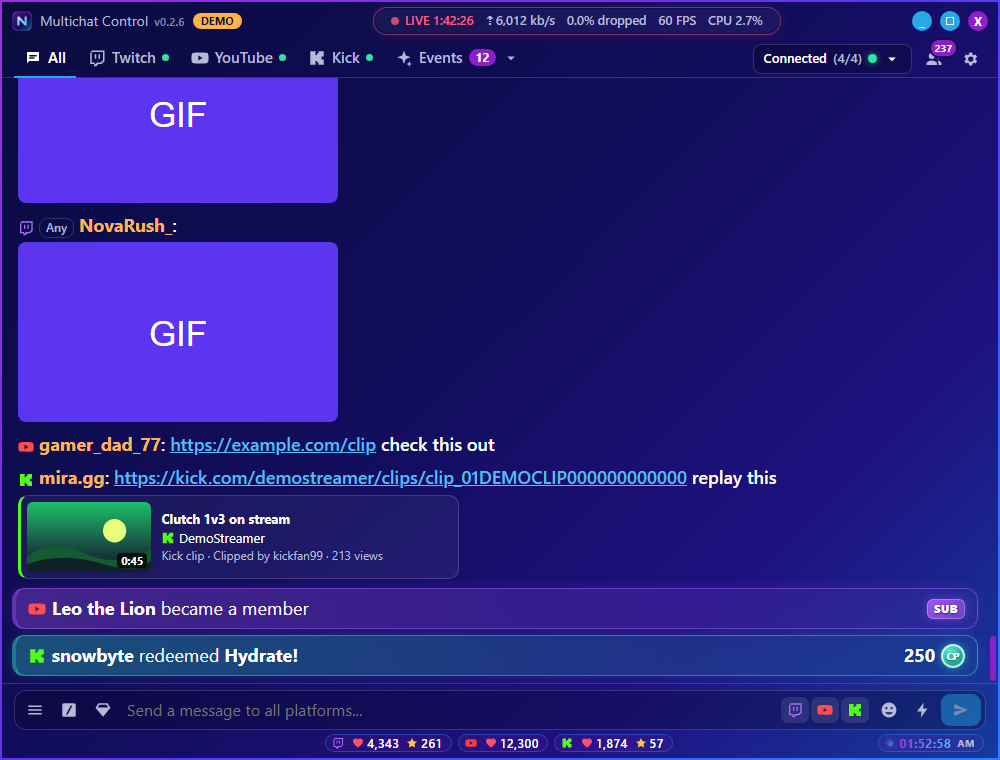

MultichatControl
NoName's Multichat Control
Read and write Twitch, YouTube and Kick chat together, see every event as it happens, and run channel actions in one click. A free, open-source Windows app for streamers who go live on several platforms at once.
Download for Windows Privacy PolicyLatest version: 0.2.6

Shown in demo mode, with invented chatters.
What it does
💬 One merged chat
Twitch, YouTube and Kick together, with a tab for each. Messages that tag you are highlighted in their platform's colour. Reply, and choose exactly where each message goes.⚡ Every event
Subscriptions, memberships, Super Chats, gifts, raids, redemptions, follows, donations and new clips of your stream in one list. YouTube videos and clips posted in chat get a preview.🛡️ Moderation
Delete messages, time out or ban on every platform, in one click. Allow or deny the messages Twitch's AutoMod holds, and spot suspicious users and "buy followers" spam bots.🎨 Made for live
OBS stats in the title bar, nine colour skins, an emote picker and a clock.How MultichatControl uses YouTube
To show your YouTube live chat and let you take part in it, the app asks you to log in with your Google account. It uses that permission only to:
- find your channel's current live stream and its live chat
- read the live chat messages
- send the messages you write
- delete messages, and time out or ban chat participants, when you choose to
Your login stays on your own computer, and nothing is sent to us. The app never touches your videos, comments, captions or ratings. Read the full Privacy Policy.
Download
Free on GitHub, for Windows 10 and 11. One small file, nothing to install. The source code is public under the MIT License.
Contact
Questions or problems: onlynonamefound@gmail.com, or open an issue on GitHub.